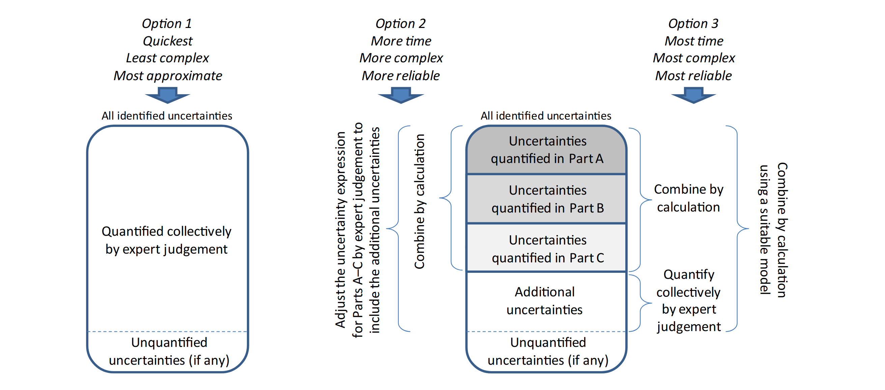

Overview of methods for Uncertainty Analysis
Identification of potentially relevant sources of uncertainty
Sources of uncertainty can affect scientific assessment at different levels.
Assessors should be systematic in searching for sources of uncertainty affecting their assessment, by considering every part or component of their assessment in turn and checking whether different types of uncertainty are present.
Uncertainties affecting the inputs used in the scientific assessment are normally identified during the process of appraising the evidence, which is an intrinsic part of scientific assessment.
See questions to identify sources of uncertainty affecting inputs
Other sources of uncertainties can be identified in relation to how the evidence is used in the assessment, including any models or reasoning that are used to draw conclusions.
See questions to identify sources of uncertainty affecting assessment methodology
Methods for obtaining expert judgements
All scientific assessment involves the use of expert judgement
Where suitable data are available, this should be used in preference to relying solely on expert judgement.
When data are strong, uncertainty may be quantified by statistical analysis, and any additional extrapolation or uncertainty addressed by minimal assessment (EFSA EKE GD), or collectively as part of the assessment of overall uncertainty.
When data are weak or diverse, it may be better to quantify uncertainty by expert judgement, supported by consideration of the data.
Formal expert knowledge elicitation (EKE) have been developed to counter psychological biases and to manage the sharing and aggregation of judgements between experts.
Formal elicitation requires significant time and resources, so it is not feasible to apply it to every source of uncertainty affecting an assessment. Instead, semi-formal expert knowledge elicitation can be applied on less important sources of uncertainty.
Scientific judgements made, usually by a Working Group of experts preparing the assessment, are referred to in this document as judgements by expert group judgement.
In practice, there is not a dichotomy between more and less formal approaches to EKE, but rather a continuum.
Qualitative methods for analysing uncertainty
Use of qualitative methods
Qualitative methods characterise uncertainty using descriptive expression or ordinal scales, without quantitative definitions
They rely on careful use of language and expert judgement.
Qualitative methods may provide a useful aid for experts when making quantitative judgements. Please see examples of qualitative methods.
Methods for quantifying uncertainty
SO Section 11 provides an overview of probabilistic and deterministic approaches for quantifying uncertainty. More detailed information on each method can be found in SO Annex B. While data play a crucial role, expert judgment should be complemented by statistical analysis whenever possible. The guidance emphasizes the use of probability as the preferred measure for quantifying uncertainty, since it offers a well-defined scale and allows for comparability between different uncertainties. Furthermore, probability enables the quantification of combined uncertainties in model outputs based on the probabilistic representation of input uncertainties. Another advantage of probability is its compatibility with Bayesian statistical analysis and the potential integration of results from non-Bayesian methods, facilitating uncertainty analysis.
When the quantity of interest is variable, determining how to address variability in the assessment is crucial. The decision-maker should specify the aspect of variability they are interested in, whether it’s the entire distribution or a particular aspect such as the worst case or a specific percentile. The choice of quantifying uncertainty depends on the aspect of interest and any models used to relate the quantity of interest to other variables.
Please, see the examples of quantitative methods.
Investigating influence and sensitivity
Sensitivity analysis (SA) is a set of methods used to assess the impact of model inputs and uncertainty expressions on the output of a quantitative model. Its objectives include prioritising sources of uncertainty, identifying inputs for refined quantification or additional data collection, investigating the sensitivity of assumptions, and examining the sensitivity of overall uncertainty.
The term “influence” refers to the overall impact of changes in the structure, parameters, and assumptions on assessment results. Sensitivity specifically refers to the quantitative impact of input uncertainties on output uncertainties in a quantitative model. Sensitivity analysis tools are discussed in SO Section 12.1. Other forms of influence can be explored by testing different scenarios and observing their effects on the assessment conclusion. Qualitative methods like the NUSAP approach and uncertainty tables can also be used. Expert judgment and formal/semi-formal elicitation techniques are valuable for assessing influence, particularly in determining which parameters should undergo formal sensitivity analysis.
SA is typically performed for quantitative models but can also be applied to logic models to assess the sensitivity of conclusions. Expert judgments are crucial for defining the ranges of values to be investigated and choosing the analysis method.
SA helps allocate uncertainty about the output to sources of uncertainty in the inputs, identifying the main contributors to output uncertainty. Two main approaches exist: local SA, which examines infinitesimal changes in inputs, and global SA, which explores the effects of input changes over their entire range. Global SA methods are more relevant for EFSA assessments due to the need to consider the full range of possible values.
SA involves changing one parameter at a time (Nominal Range SA) or examining the combined effects of multiple changes, especially when interactions between inputs exist. However, SA cannot guide initial model design or the selection of sources of uncertainty for quantitative uncertainty analysis; expert judgment is necessary for these decisions. Subjective considerations of sensitivity should be carefully documented, and semi-formal expert elicitation may be appropriate when their impact on the assessment is significant.
Methods for SA can be categorized as mathematical (deterministic), statistical (probabilistic), or graphical. They provide insights into which data sets, assumptions, or expert judgments require closer examination. Simple methods can be applied to assess the relative sensitivity of the output to individual variables and parameters. Separating the contributions of uncertainty and variability is an important issue in SA, and ongoing development is needed for situations where both components are present.
SA contributes to uncertainty analysis by analyzing the contributions of individual sources of uncertainty to the overall uncertainty of the assessment conclusion. It expresses the sensitivity of the assessment output quantitatively and/or graphically to input changes. Its strengths include structured identification of influential sources of uncertainty/variability, but it faces challenges in separately assessing the sensitivity to sources of uncertainty and variability.
Read more in SO Annex B.17
Characterisation of overall uncertainty
There are three options for quantifying the overall uncertainty, depending on the context:
Option 1: Make a single judgement of the overall impact of all the identified uncertainties.
Option 2: Quantify uncertainty separately in some parts of the assessment, combine them by calculation, and then adjust the result of the calculation by expert judgement to account for the additional uncertainties that are not yet included.
Option 3: Quantify uncertainty separately in some parts of the assessment and combine them by calculation, as in Option 2. Then quantify the contribution of the additional uncertainties separately, by expert judgement, and combine it with the previously quantified uncertainty by calculation.